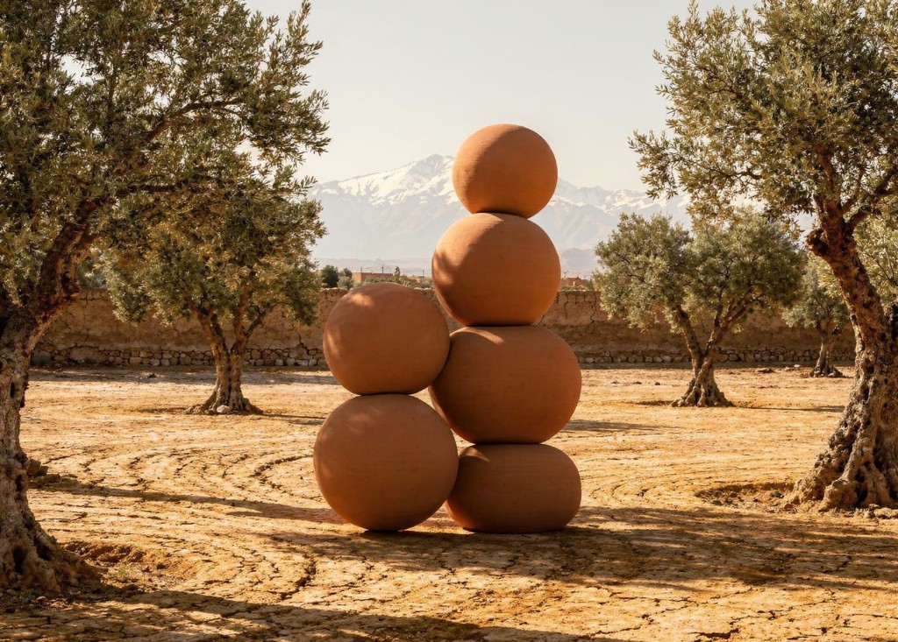

Ce document de due diligence adresse les questions que tout investisseur sérieux pose avant d'engager 250 000€ dans un actif immobilier étranger. Chaque point est traité avec la même honnêteté que l'ensemble du dossier.
Les investisseurs entrent via TB Invest SAS, société par actions simplifiée de droit français. Les dividendes sont versés en euros depuis la SAS. La convention fiscale France-Belgique s'applique. Aucune procédure de change ou de rapatriement marocaine n'est requise de la part des investisseurs.

En 2024, nous avons soumis et fait accepter une offre d'achat à 1 400 000€ par le propriétaire britannique de Tigmi. Avant la signature de la promesse de vente, le propriétaire est décédé. Procédure d'exequatur engagée.
Quatorze mois plus tard, les fils nous recontactent. Notre position est non négociable : 1 400 000€, l'offre acceptée par leur père. Pas un euro de plus.
1 400 000€ au closing - financés par les investisseurs et la banque. 200 000€ payables 24 mois après l'ouverture, depuis la trésorerie de l'hôtel. Aucun appel de fonds supplémentaire aux investisseurs pour cette composante.
Bilingue FR/EN/AR. Luxe Maroc. Réseau local Haouz. Recruté avant démarrage chantier. Salarié SARL marocaine.
Équipes Tigmi actuelles = base de recrutement prioritaire. Salaires revalorisés, formation TB Standards, CNSS conformes.
La licence alcool est au nom du propriétaire décédé. Transfert : 6 à 9 mois de procédure.
Procédure initiée à la signature. Hôtel fermé 12 mois pendant le transfert. Licence opérationnelle avant l'ouverture. Aucune perte de revenus bar pour les investisseurs.
40 000€ provisionnés dans le budget - intégré dans 3 150 000€. Frais notariaux et administratifs couverts.
Bar cocktails haute marge. Vins naturels marocains, carte courte et précise. Opérationnel dès la première nuit.
La CNSS est la sécurité sociale marocaine. Risque courant dans les petits hôtels à gestion informelle.
Audit CNSS commandé en due diligence. Passif identifié = défalqué du prix ou réglé par vendeurs. 30 000€ = buffer résiduel post-closing.
En achetant les parts SARL, on reprend le passif historique. L'audit le nettoie avant closing. Toile Blanche repart sur des bases 100% conformes.
Après ouverture : multirisque hôtelière permanente. Bâtiment + contenu ~3M€, RC exploitation, perte d'exploitation 180j.
Le CC confirme la conformité aux plans, pas la résistance parasismique post-2023.
50 000€ déjà provisionnés dans le budget rénovation. Si besoin supérieur : renégociation du prix.
Ce Club Deal est une participation dans un actif immobilier réel. L'hôtel acquis pour 1 400 000€ et rénové pour 1 590 000€ représente un investissement total de 2 990 000€. Ce que vous possédez collectivement : 30 clés rénovées aux standards Toile Blanche, deux piscines, un hammam, un restaurant, une galerie, 7 000m² de terrain au pied de l'Atlas.
Wij hebben dit actief verworven onder zijn vervangingswaarde. De renovatie creëert een waarde die de investering overtreft.
Wij betalen 1 400 000€ voor een bestaand hotel met twee zwembaden, een hammam en 7 000m² grond. De Kasbah Dif op 300 meter opende in 2025 met een investering van 4 tot 5 miljoen euro. Wij betreden dezelfde markt aan een derde van de kosten.
« Ce n'est pas une garantie formelle. C'est la logique sous-jacente : nous achetons un actif réel en dessous de sa valeur de marché, nous le rénovons avec les standards d'une marque reconnue, et nous l'exploitons. La valeur de l'actif dépasse l'investissement avant même d'ouvrir la porte. »
Le point mort répond à la question : dans quel scénario catastrophe le preferred de 10% ne serait-il pas payé ?
Charges fixes totales : 1 104 000€/an (RH + charges op + dette + preferred 10%).
| Taux d'occupation | ADR minimum | Marge vs 450€ |
|---|---|---|
| 30% | 353€ | +97€ (+27%) |
| 40% | 265€ | +185€ (+70%) |
| 50% - plancher réaliste | 212€ | +238€ (+112%) |
| 60% - cible année 1 | 191€ | +273€ (+155%) |
| 75% - stabilisé | 141€ | +359€ (+254%) |
À 60% d'occupation, le preferred est couvert dès 191€ d'ADR. Notre cible est 450€. L'ADR doit chuter de 61% pour menacer le preferred.
L'ADR actuel de Tigmi sous sa gestion actuelle est 150€ - déjà presque au break-even. Post-TB à 450€, le risque est théorique.
Si ADR = 300€ seulement (33% sous cible) :
Dans tous ces scénarios, votre preferred 10% est servi intégralement. Il faudrait descendre à 191€ d'ADR pour qu'il soit en risque.
« Le preferred de 10% n'est pas une promesse. C'est la conséquence mécanique d'un hôtel qui tourne à n'importe quel niveau au-dessus du statu quo actuel. »
Le séisme a laissé de nombreuses familles dans l'incapacité de rebâtir. L'hôtel, en tant qu'employeur principal du douar, a un accès privilégié à ces propriétés. La contrainte n'est pas l'offre.
Fenêtre de 5 ans (années 5 à 10). Rythme : 2 riads/an, conservateur au regard des délais locaux. Premières acquisitions dès l'année 2 d'exploitation.
Si le riad n'est pas livrable avant l'année 10, le pacte prévoit deux alternatives au choix de l'investisseur :
À partir de l'année 5, si un investisseur ne souhaite plus de riad, il notifie la SARL et reçoit 250 000€ cash. Personne n'est jamais contraint de prendre un bien qu'il ne veut pas.
« Vous ne pouvez pas rester coincé. Soit vous recevez votre riad dans les 10 ans. Soit vous attendez 2 ans de plus avec des revenus maintenus. Soit vous recevez 250 000€ cash. L'une de ces trois choses se produit - sans exception. »